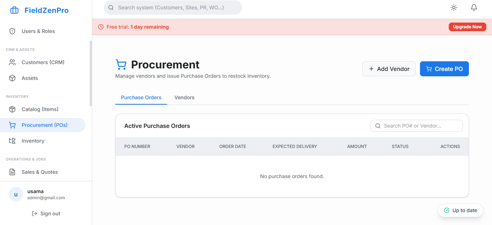

If you run a growing service business, you need software that helps you schedule, dispatch, and invoice efficiently. While ServiceTitan dominates the headlines, it's often overkill and overpriced for small businesses. Fortunately, there are fantastic alternatives designed specifically for the needs of growing teams.
For decades, companies relied on whiteboards, carbon-copy work orders, and endless phone calls. Then came the era of fragmented software: one tool for accounting, another for scheduling, and yet another for dispatching. But in 2026, the standard has changed. The solution to operational chaos is adopting a modern field service management software (FSM) platform.
In this comprehensive guide, we will explore exactly what field service management software is, why legacy systems are holding your business back, and how modern platforms like FieldZenPro are revolutionizing the way service businesses operate and scale.

At its core, field service management software is a digital platform designed to coordinate and optimize the operations of a business that deploys technicians or workers to a customer’s location (the "field"). This encompasses a wide range of industries, including HVAC repair, landscaping, telecommunications, pest control, and facilities management.
A true FSM system acts as the central nervous system for your business. It bridges the gap between the back office, the field technicians, and the customer. Instead of information living in silos, an FSM platform ensures that everyone is looking at the exact same data in real-time.
When a customer calls in with a broken air conditioner, the dispatcher logs the call into the FSM. The software instantly identifies the closest available technician with the right skills and assigns the job. The technician receives a push notification on their mobile device with the route, the customer’s history, and the specific equipment details. Once the job is completed, the technician captures a digital signature, and the system automatically generates and emails the invoice. This seamless workflow is the hallmark of modern field service management.
"Companies that adopt integrated field service management software see an average 25% increase in technician productivity and a 30% reduction in administrative overhead within the first year."
Not all FSM platforms are created equal. While basic systems might offer simple calendaring, a modern, enterprise-grade platform like FieldZenPro provides a comprehensive suite of tools designed to handle every aspect of the service lifecycle.
The days of relying on intuition and whiteboards to route technicians are over. Modern field service management software uses advanced algorithms to optimize scheduling. Dispatchers can view a map interface that shows the real-time GPS location of every technician. When an emergency call comes in, the dispatcher can instantly identify the closest technician and drag-and-drop the job onto their schedule, dynamically updating their route.
Paper work orders get lost, smudged, and forgotten. Digital work order management digitizes the entire process. Technicians can access all job details, customer history, and specific instructions directly from their smartphone. They can also take "before and after" photos, fill out mandatory digital checklists, and capture customer signatures directly on their device. This ensures compliance and completely eliminates data entry errors.
Cash flow is the lifeblood of any service business. FSM software accelerates the quote-to-cash cycle. Instead of waiting weeks for paper invoices to be mailed, processed, and paid, technicians can generate professional invoices on the spot. Integrations with payment processors like Stripe allow customers to pay via credit card immediately after the job is completed, drastically reducing days sales outstanding (DSO).
Knowing exactly what parts you have in the warehouse—and in the back of every technician's van—is crucial for avoiding delays. Modern FSM software includes inventory tracking that automatically deducts parts as they are used on work orders. When stock drops below a certain threshold, the system can automatically generate a purchase order for your suppliers.
Many businesses are still limping along using legacy software that was built over a decade ago. These systems are often installed locally on an office server, meaning they cannot be easily accessed by technicians in the field. They are clunky, require extensive training, and often look like they were designed for Windows 95.
The primary issue with legacy systems is fragmentation. Because they lack modern APIs, they don't communicate well with other tools. You end up manually exporting data from your scheduling tool just to import it into your accounting software. This double-data entry is a massive waste of administrative hours and introduces the risk of human error.
Furthermore, modern customers expect a modern experience. They expect the "Uber experience"—they want to receive an SMS when the technician is en route, track their arrival time, and pay their bill online. Legacy software simply cannot provide this level of customer engagement.
The shift to cloud-based field service management software has been the most significant technological leap in the industry. Cloud software is hosted on secure, remote servers (like Microsoft Azure or Amazon Web Services) and is accessible from any device with an internet connection.
FieldZenPro was built from the ground up to address the specific pain points of modern service businesses. It is an all-in-one ERP that combines CRM, Work Orders, Inventory, Invoicing, and Payroll into a single, beautifully designed interface.
Unlike clunky legacy tools, FieldZenPro utilizes a clean, modern design language that makes onboarding new staff incredibly fast. The powerful offline-sync mobile app empowers technicians, while the dynamic dashboard gives business owners absolute visibility into revenue, job completion rates, and outstanding invoices.
By bringing all your operations under one roof, FieldZenPro doesn't just organize your business—it gives you the foundation required to scale rapidly without letting quality or customer satisfaction slip.
Stop losing money to inefficiencies and lost paperwork. Join the hundreds of businesses scaling with FieldZenPro.
Start Your 14-Day Free Trial